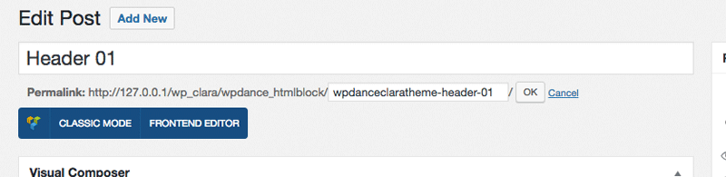
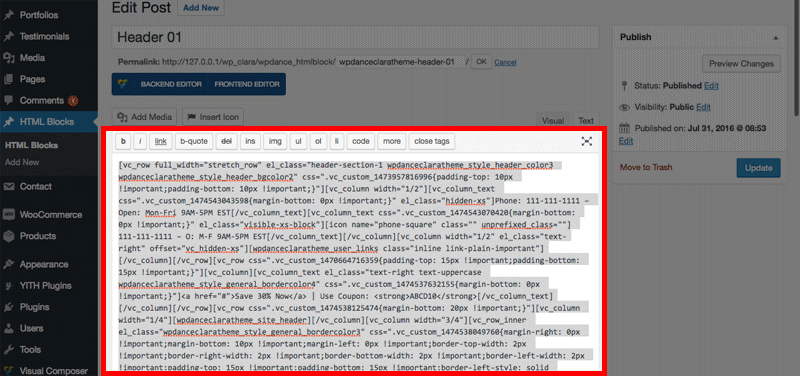
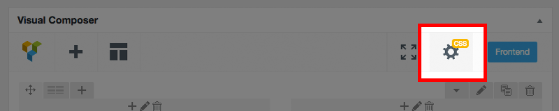
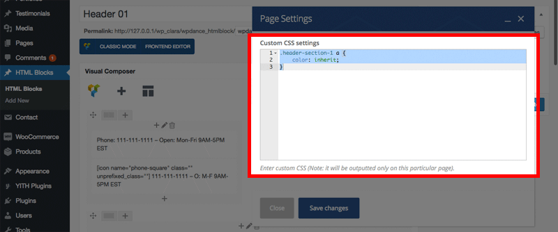

Manage Headers & Footers with WPDance HTMLBLock plugin¶
Theme uses plugin WPDance HTMLBlock for managing, adding and editing unlimited Headers and Footers using Visual Composer drag & drop content builder.
To install and activate the plugin WPDance HTMLBlocks, please follow the instruction from Quick Start section.
When the theme is activated, default Headers & Footers provided by the theme will be automatically added.
- If you accidentially delete or want to restore the original version, just delete it, then deactivate and reactivate the theme again, it will be restored automatically.
If you refer to add add or edit each Header and Footer manually, you can do as following steps.
Create Header 01¶
On the admin page, click menu HTML Blocks > Add New to add a new header or footer.
- Title: Enter title, example:
Header 01. - Slug:
- For Header, the slug name must contains a word
header, example:wpdanceclaratheme-header-01 - For Footer, the slug name must contains a word
footer.
- For Header, the slug name must contains a word

Click Classic Mode button and click tab Text to switch to WordPress standard text editor.
For Copy content of file sample-data/header-01.txt into the content field:

Click button Backend Editor to go back Visual Composer editor mode.
Next, click button Page Settings to open CSS editor for this header/footer:

Copy content of file sample-data/header-01-css.txt into the Custom CSS settings field:

Click Save changes.
Finally, click Publish & Update button to save the header/footer.
Create Header 02¶
Doing simliar Header 01 with below data:
- Title:
Header 02 - Slug:
wpdanceclaratheme-header-02 - Content: Copy from content of file sample-data/header-02.txt
- Custom CSS settings: Copy from content of file sample-data/header-02-css.txt
Create Header 03¶
Doing simliar Header 01 with below data:
- Title:
Header 03 - Slug:
wpdanceclaratheme-header-03 - Content: Copy from content of file sample-data/header-03.txt
- Custom CSS settings: Copy from content of file sample-data/header-03-css.txt
Create Header 05¶
Doing simliar Header 01 with below data:
- Title:
Header 05 - Slug:
wpdanceclaratheme-header-05 - Content: Copy from content of file sample-data/header-05.txt
- Custom CSS settings: Copy from content of file sample-data/header-05-css.txt
Create Header 06¶
Doing simliar Header 01 with below data:
- Title:
Header 06 - Slug:
wpdanceclaratheme-header-06 - Content: Copy from content of file sample-data/header-06.txt
- Custom CSS settings: N/A
Create Header 07¶
Doing simliar Header 07 with below data:
- Title:
Header 07 - Slug:
wpdanceclaratheme-header-07 - Content: Copy from content of file sample-data/header-07.txt
- Custom CSS settings: N/A
Create Header 08¶
Doing simliar Header 01 with below data:
- Title:
Header 08 - Slug:
wpdanceclaratheme-header-08 - Content: Copy from content of file sample-data/header-08.txt
- Custom CSS settings: Copy from content of file sample-data/header-08-css.txt
Create Header 08 With Slideshow¶
Doing simliar Header 01 with below data:
- Title:
Header 08 - With Slideshow - Slug:
wpdanceclaratheme-header-08-with-slideshow - Content: Copy from content of file sample-data/header-08.txt
- Custom CSS settings: Copy from content of file sample-data/header-08-css.txt
Create Footer 01¶
Doing simliar Header 01 with below data:
- Title:
Footer 01 - Slug:
wpdanceclaratheme-footer-01 - Content: Copy from content of file sample-data/footer-01.txt
- Custom CSS settings: Copy from content of file sample-data/footer-01-css.txt
Create Footer 02¶
Doing simliar Header 01 with below data:
- Title:
Footer 02 - Slug:
wpdanceclaratheme-footer-02 - Content: Copy from content of file sample-data/footer-02.txt
- Custom CSS settings: Copy from content of file sample-data/footer-02-css.txt
Create Footer 03¶
Doing simliar Header 01 with below data:
- Title:
Footer 03 - Slug:
wpdanceclaratheme-footer-03 - Content: Copy from content of file sample-data/footer-03.txt
- Custom CSS settings: Copy from content of file sample-data/footer-03-css.txt
Create Footer 04¶
Doing simliar Header 01 with below data:
- Title:
Footer 04 - Slug:
wpdanceclaratheme-footer-04 - Content: Copy from content of file sample-data/footer-04.txt
- Custom CSS settings: Copy from content of file sample-data/footer-04-css.txt
Create Footer 05¶
Doing simliar Header 01 with below data:
- Title:
Footer 05 - Slug:
wpdanceclaratheme-footer-05 - Content: Copy from content of file sample-data/footer-05.txt
- Custom CSS settings: Copy from content of file sample-data/footer-05-css.txt
Create Footer 06¶
Doing simliar Header 01 with below data:
- Title:
Footer 06 - Slug:
wpdanceclaratheme-footer-06 - Content: Copy from content of file sample-data/footer-06.txt
- Custom CSS settings: Copy from content of file sample-data/footer-06-css.txt
Create Footer 07¶
Doing simliar Header 01 with below data:
- Title:
Footer 07 - Slug:
wpdanceclaratheme-footer-07 - Content: Copy from content of file sample-data/footer-07.txt
- Custom CSS settings: Copy from content of file sample-data/footer-07-css.txt
Configure Default Header & Footer¶
To set a default header and footer for your site, go to admin page, click menu Appearance > Customize to open WordPress Customizer panel.
Click CLARA Header, choose a header you want. go back and click CLARA Footer, choose a footer you want. Finally, click Save & Publish button.

Use different Header or Footer for a page¶
If you want a page has different header or footer, you can specify which header and footer in CLARA Options when editing page or post. Please read more instruction Specific layout for a page, post, product, portfolio in How-To section.